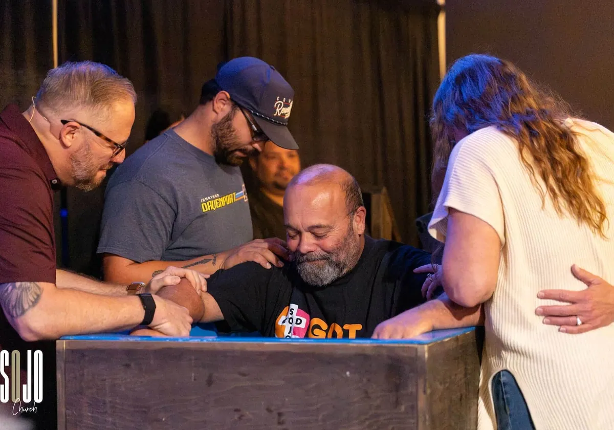
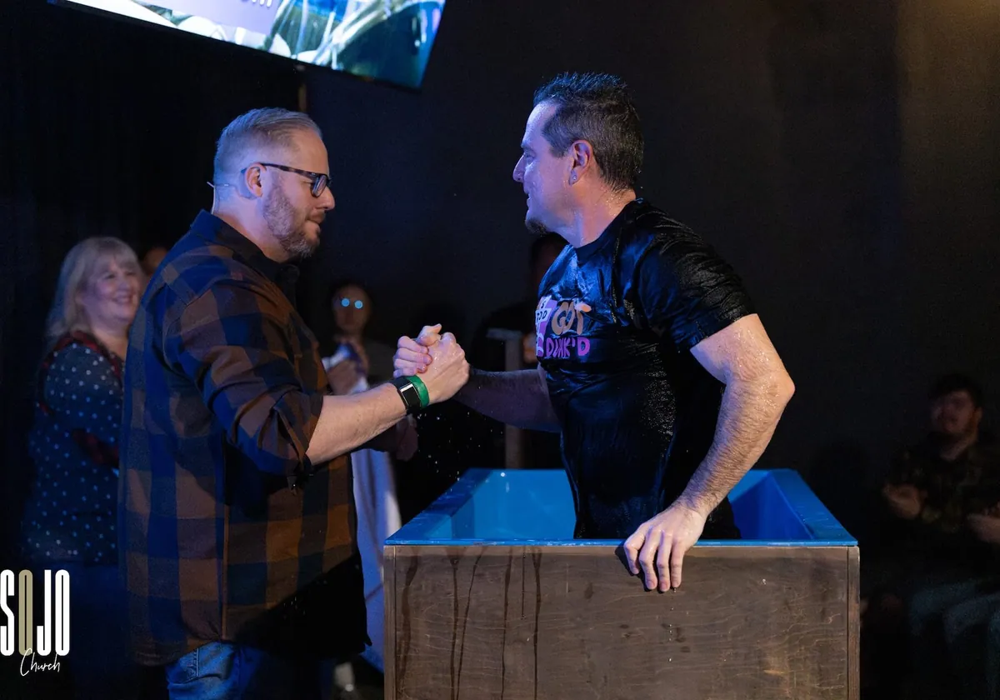

Know · Part Four
Buried and raised:
Baptism
Knowing him. His plan. Your yes. Baptism is where all three go public — the oldest announcement in the church, made with water.
What it means
The public yes
“We were buried with him by baptism into death, in order that... we too may walk in newness of life.”
Romans 6:4, CSB
Everything the last three pages said, baptism says — out loud, in front of your people. Going under the water: the old you, buried with Jesus. Coming up: the new you, raised with him. It’s a funeral and a birth in about four seconds.
Be clear on this: the water doesn’t save you — grace does. Baptism is the wedding ring, not the marriage. But Jesus was baptized himself, and he told his followers to baptize every new apprentice (Matthew 28:19). If he’s your Lord, it’s not really a question of whether. Just when.

At the tank · SOJO Church
The details
Who, what, why,
when, where, how
Who
Anyone who has decided to follow Jesus. That’s the one requirement — not perfection, not a theology degree, not a waiting period. Kids who are asking about it: we’d love to talk with you and your family first.
What
Full immersion — all the way under, the way Jesus did it in the Jordan. It’s a symbol you act out with your whole body: buried with him, raised with him.
Why
Because Jesus asked (Matthew 28:19), because it declares in public what happened in private, and because you’ll never forget it — and neither will the people watching.
When
We baptize regularly at Sunday services, and September 6 at Gibson Mill opens a brand-new tank in a brand-new room. Tell us you’re ready and we’ll get you the very next date.
Where
Sunday mornings at The Kettle Room at Gibson Mill — 325 McGill Ave NW, Suite 148, Concord. In front of your church family, which is the whole point.
How
Text us with the button below. A pastor sits down with you for a short, easy conversation — your story, what baptism means, any questions. Then Sunday: bring dark clothes and a change; we bring the towel and the party.
Take the step
The water’s
ready
One text starts it. The message is already written — add your name and hit send, and a pastor will reply, usually the same day.
Honest questions
Asked all
the time
Do I need to get my life together first?
I was baptized as a baby. Does that count?
Can my kids be baptized?
What do I wear?
Will I have to speak in front of everyone?
What if I’m nervous?
knowFour seconds of water. A whole life of new.